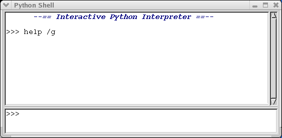

Python: SaveArray(my_array,'my_filename') Command: save my_array my_filenameExtension modules with other commands may be registered using the core command loadext, but commands require more overhead to implement and in most cases it is preferable to use the ordinary python syntax.
If you're not familiar with Python or Numeric Python (NumPy) here are some references:
The shell consists of a command input window (bottom) and an output window (top). Aside from the registered commands, it behaves in the same way as the Python command line interpreter. Use the up and down arrow keys to scroll through previous command history.

Core command list:
array1 = LoadFile(`filename.foo`)
Display it in the current view:
display(array1)
To get the Region Of Interest (ROI) marked on the image:
SaveArray(array2,'filename2.tif')
array3=ones([5,6],Float)
Reset rows 1 to 4, columns 1 to 5 of the array with some values:
array3[1:5,1:6]=array([[1,2,3,4,5],[6,7,8,9,10],[11,12,13,14,15],[16,17,18,19,20]],Float)
Square it:
array3=power(array3,2)
Display it in the current view:
display(array3)
Some important points to note are:
layer = gview.app.sel_manager.get_active_layer()
...and load data array into memory:
ds = layer.get_parent().get_dataset()
data = DatasetReadAsArray(ds)
Note: using the core command get with the argument data
(ie. enter "get data" at the command line) will perform these three steps
for you.If you don't want open and display your input data with OpenEV, but want load the file(s) in memory, make some calculations and display result, you can use other approach instead of previous steps:
data = LoadFile('filename.l1b')
(In this sample we will work with NOAA AVHRR data in L1B format).
ndvi = (data[1] - data[0]) / (data[1] + data[0])
display(ndvi)
SaveArray(ndvi,'ndvi.tif','GTiff')
Note, that in all our computations arrays are fully loaded into
memory. Be sure you have enough resources for this. For large arrays
loading and calculations may take some time.
rgb = zeros((3, ds.RasterYSize, ds.RasterXSize), UnsignedInt8)
for i in range(3):
rgb[i] = (data[i] * 256 / 1024).astype(UnsignedInt8)
display(rgb)
This code produces a RGB composite from the first three channels of
the input image, but you can unroll the loop and use channels you
want. Following code uses channel 5 as red, 2 as green and 3 as blue:
rgb[0] = (data[4] * 256 / 1024).astype(UnsignedInt8)
rgb[1] = (data[1] * 256 / 1024).astype(UnsignedInt8)
rgb[2] = (data[3] * 256 / 1024).astype(UnsignedInt8)
layer = gview.app.sel_manager.get_active_layer()
ds = layer.get_parent().get_dataset()
data = DatasetReadAsArray(ds)
incl = float(ds.GetMetadata()["INCL2"])
offset = float(ds.GetMetadata()["OFFSET2"])
data_cal = data * incl + offset
display(data_cal)
COMMAND_NAME=my_command Module: my_module Group: my_group Html: my_html.html documentation... FUNCTION_NAME=my_func Module: my_module Html: my_html.html documentation... BUILTIN_NAME=my_builtin Module: my_module Html: my_html.html documentation...where my_command, my_func, and my_builtin are a user-defined command, function, and builtin (bound C) function respectively. The Html entry is used to indicate an html file with more information, and is optional (currently, the python shell will not do anything with html information other than store the name of the link- this may be used in future though). The Module name is required to deal with the case of two modules defining different commands/functions with the same name. The COMMAND_NAME, FUNCTION_NAME, BUILTIN_NAME, Module, and Html parts of the text file are case-sensitive (ie. an error will occur if the case is not as above). See gvcorecmds.py's RegisterHelp function for how to register a help file with the interpreter (this function determines the location of gvcorecmds_help.txt assuming that it is in the same directory as gvcorecmds.py, and loads the text from it if it is present). The suggested convention for text help files is that if they are needed, they be placed in the same directory as the commands/functions they relate to, and have the same name as the command module, minus the '.py', plus '_help.txt'.